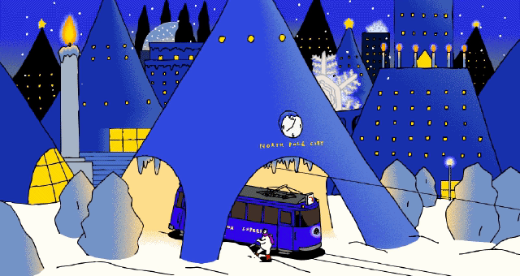

Santa Claus Village (pic unrelated)
北極点近くにあるサンタクロースの村。大きなおもちゃ工場があり、クリスマスが近づくと大変な忙しさだ。クリスマスが過ぎると村の灯が消えて急に寂しくなる。
最近はトナカイのそりを使うことも少なくなり、オーロラ号、サンタロボットなどが開発されている。

|
||

|

|

|

|
|  | |||||||||
|
Santa Claus Village (pic unrelated) |
|||||||||
|